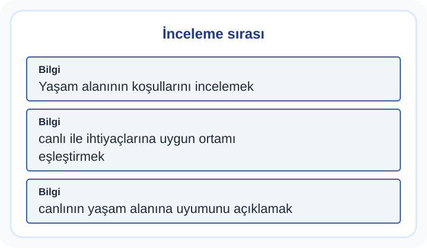

3. Sınıf Fen Bilimleri Canlıların Yaşam Alanlarına Yolculuk Orta Test 1
Bir canlının yaşam alanı; su, besin, barınma ve iklim koşullarıyla ilişkilidir. Ortamdaki bir değişikliğin canlıların yaşamını nasıl etkileyebileceğini neden ve sonuçlarıyla düşün.
10 soru · Yaklaşık 15 dakika. Bu bir süre sınırı değildir; açıklamaları kendi hızında inceleyebilirsin.
Canlıların Yaşam Alanlarına Yolculuk: konu anlatımı ve çözümlü çalışma
Başlamadan önce dikkat et
Bir canlıyı görmemeyi onun yok olmasıyla eş tutma. Bütün canlıların aynı yerde aynı ihtiyaçlarını karşılayabildiğini de düşünme. Gölette su canlıları, ormanda farklı bitki ve hayvanlar bulunabilir; her ortamın koşulları değerlendirilir.
Bu testten iki çözümlü örnek
1. örneği incele
Bir gölette su bitkileri, böcekler ve kurbağalar kaydediliyor. Bu liste hangi düşünceyi destekler?
- Gölet farklı canlıların yaşam alanı olabilir.
- Gölette yalnız bitkiler yaşar.
- Kurbağalar hiçbir yaşam alanına ihtiyaç duymaz.
Cevap ve gerekçe
Gölet farklı canlıların yaşam alanı olabilir.
Listede hem bitkiler hem hayvanlar vardır. Bu canlıların aynı ortamda gözlenmesi göletin farklı canlılara yaşam alanı sunduğunu gösterir.
2. örneği incele
3. sınıf Fen orta — Canlıların Yaşam Alanlarına Yolculuk: Planlı bir incelemede doğru sıra hangisidir?

- Yaşam alanının koşullarını incelemek → canlı ile ihtiyaçlarına uygun ortamı eşleştirmek → canlının yaşam alanına uyumunu açıklamak
- canlının yaşam alanına uyumunu açıklamak → Yaşam alanının koşullarını incelemek → canlı ile ihtiyaçlarına uygun ortamı eşleştirmek
- canlı ile ihtiyaçlarına uygun ortamı eşleştirmek → sonucu silmek → Yaşam alanının koşullarını incelemek
Cevap ve gerekçe
Yaşam alanının koşullarını incelemek → canlı ile ihtiyaçlarına uygun ortamı eşleştirmek → canlının yaşam alanına uyumunu açıklamak
Soru, uygulama ve sonuç doğru sırada verilmiştir.
Testten sonra kısa çalışma
Bahçenin iki bölümünü aynı sürede, canlılara dokunmadan gözle. Hangi bitki ve hayvanları gördüğünü tarih ve yerle kaydet. Yuva veya taş altı gibi barınma yerlerini bozma. Bir canlının hangi ihtiyacının o ortamda karşılandığını açıkla.
Yanlışlarını Öğren bölümünde kendi cevabını açıklamayla karşılaştır. Bir sonraki denemede cevabı ezberlemek yerine nedenini anlat. Veliler için sonuçları yorumlama
Soruların hazırlanması ve kontrol sınırları · İçerik hatası bildir
Öğrenme alanı: Canlıların Yaşam Alanlarına Yolculuk. Buradaki beceriler çalışma odağını anlatır; resmî MEB öğrenme çıktısı kodları değildir. testcoz.pro, Millî Eğitim Bakanlığı’nın resmî sitesi değildir.
Testleri kayıt olmadan çözebilirsiniz. İsteğe bağlı kayıt, günlük hedef ve öğrenci paneli gibi ek özellikler için sunulur.